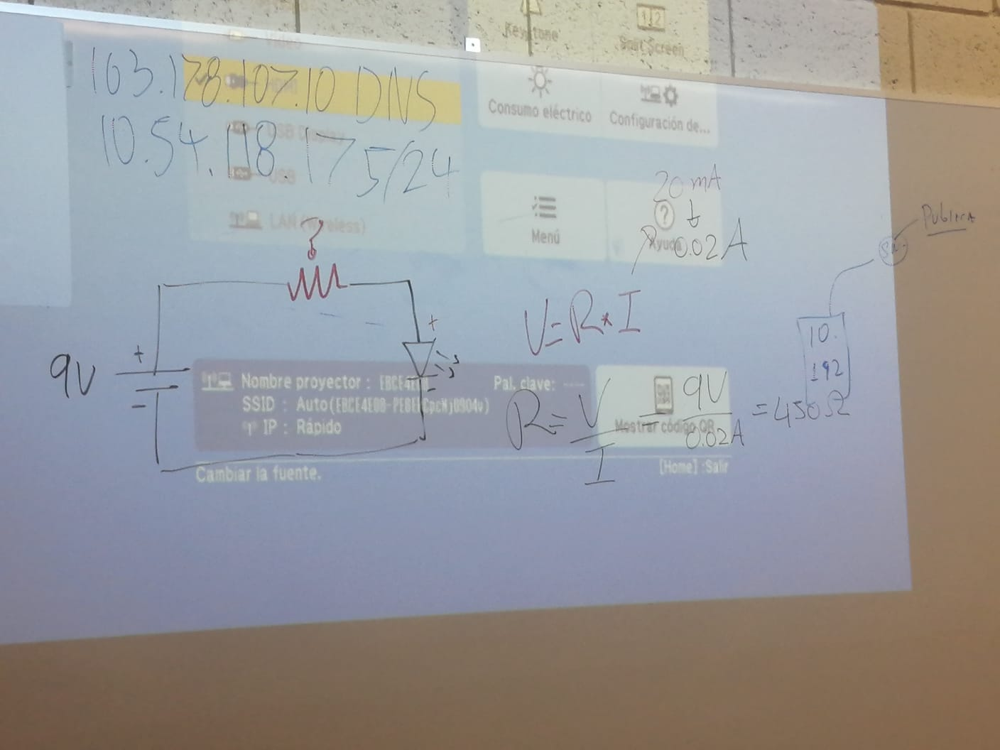
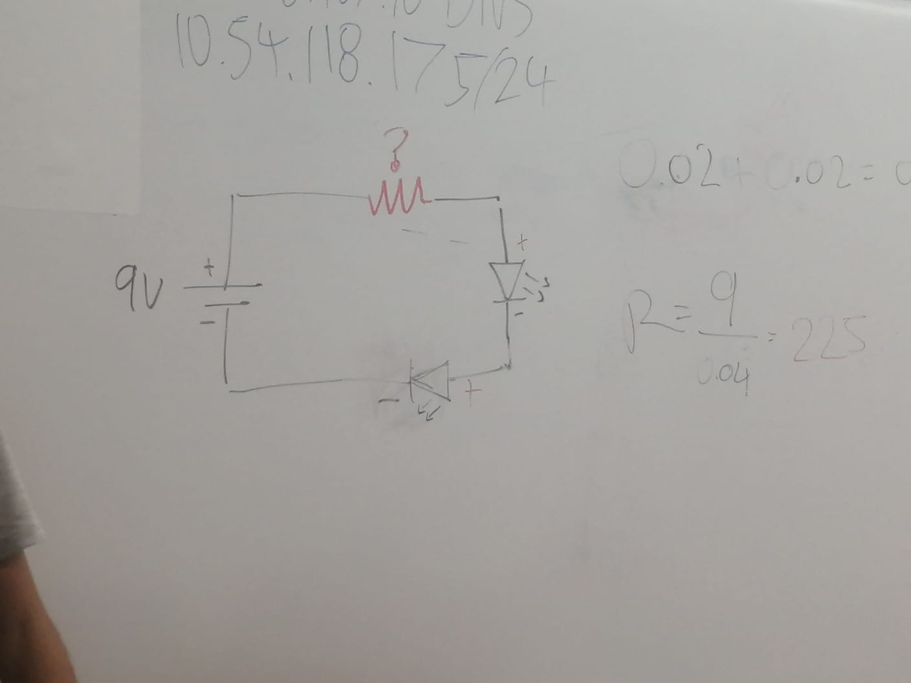
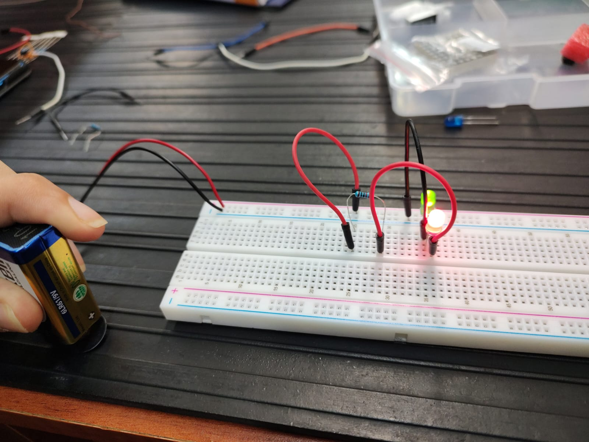
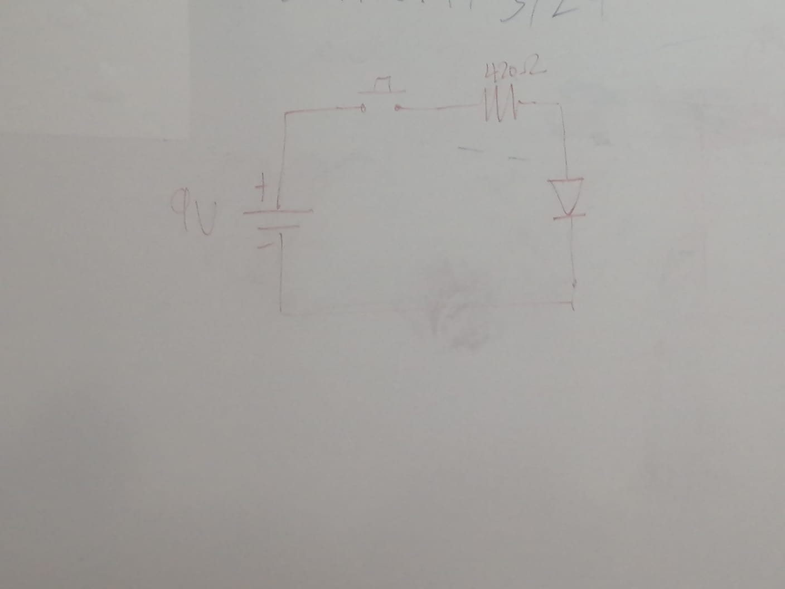

En esta clase recopilamos información sobre los tipos de circuitos y como se construyen tanto en forma fisica como en su forma gráfica.
Circuito SimpleEn esta imagen se puede apreciar el circuito en diagrama
A continuación la representación gráfica:
En las imagenes anteriores se puede apreciar como se construye el circuito para que actue de manera correcta
Circuito en serieDiagrama del circuito
En la siguiente imagen se observa la construcción del circuito en funcionamiento.
 Circuito paraleloEn las siguientes imagenes se puede apreciar el funcionamiento del circuito paralelo construido
Diagrama del circuito
Para ejemplificar el circuito se adjunta un video de su funcionamiento.
En esta clase comenzamos a aplicar la teoria vista en clase sobre el uso de compuertas lógicas, así como sus diagramas, además comenzamos a utilizar una serie de nuevos componentes para la realización fisica de estos circuitos.
Por lo que comenzaremos la demostración de los diferentes circuitos realizados en este laboratorio.
Antes de realizar el circuito con una compuerta lógica AND, necesitabamos comprender como funciona esta compuerta, por lo que realizamos este circuito sin la compuerta pero que realizara la funciÓn como si se estuviera usando una compuerta lógica.
Antes de realizar el circuito con una compuerta lógica OR, necesitabamos comprender como funciona esta compuerta, por lo que realizamos este circuito sin la compuerta pero que realizara la funciÓn como si se estuviera usando una compuerta lógica.
Una vez se ha comprendido la importancia de una compuerta lógica AND mediante la ejemplificación anterior de un circuito que realiza la función de este pero sin la compuerta lógica, decidimos realizar el circuito ahora implementando esta compuerta para resaltar su valor util
Una vez se ha comprendido la importancia de una compuerta lógica OR mediante la ejemplificación anterior de un circuito que realiza la función de este pero sin la compuerta lógica, decidimos realizar el circuito ahora implementando esta compuerta para resaltar su valor util
Al tener claro los conceptos de compuertas lógicas, funciones booleanas y circuitos, realizamos un ejercicio el cual combinaba los conceptos vistos anteriormente en clase.
Este circuito se basa en el análisis de una tabla de verdad la cual nos daba como resultado dos funciones booleanas mediante la suma de mintérminos para así, simplificarlas de la mejor forma mediante las reglas de algebra booleana vistas en clases, buscando la máxima optimización de recursos.
.accordion-body, though the transition does limit overflow.
.accordion-body, though the transition does limit overflow.